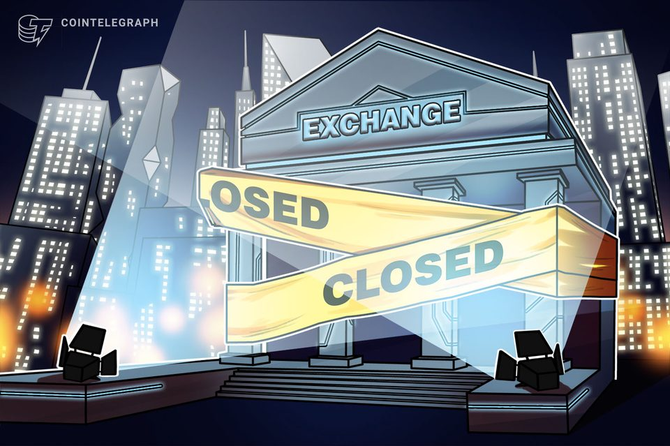
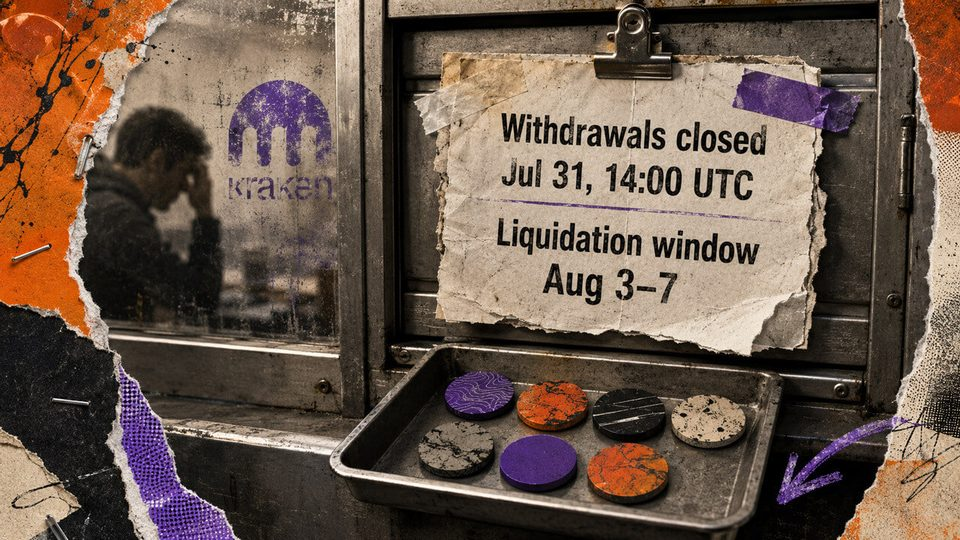
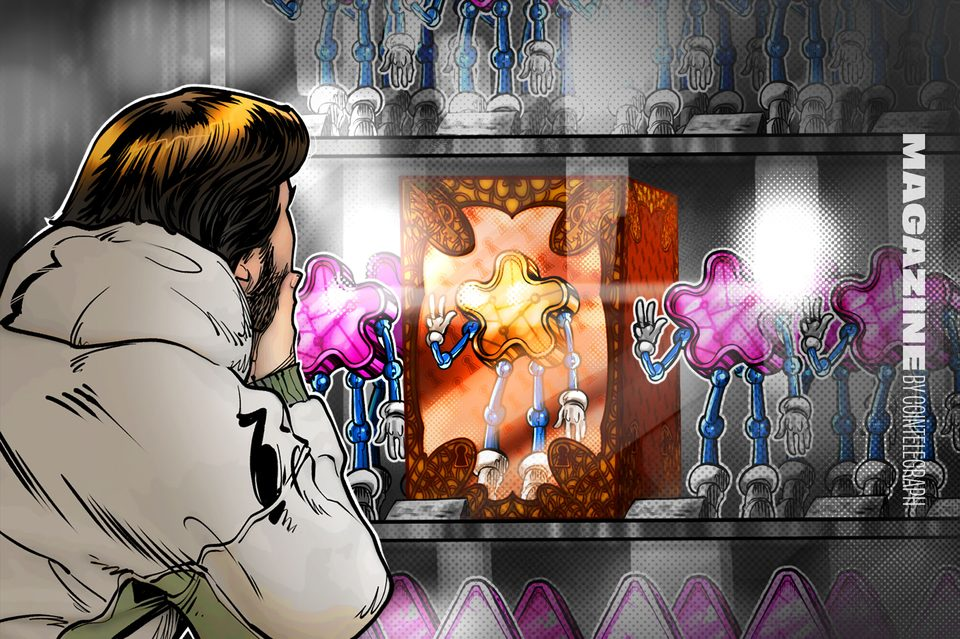

Tom Lee's Bitmine Buys More Ethereum, Adds to Stock Buyback
The crypto treasury company says it added another 10,399 ETH last week, bringing its holdings to nearly 5.8 million ETH as it pushes toward its goal of owning 5% of Ethereum's...
Solana just boosted block capacity by a massive 66%, but the one bottleneck infuriating traders hasn't budged
The 100M-CU ceiling expands parallel headroom, but transactions targeting the same writable state get no extra room. The post Solana just boosted block capacity by a massive 66%,...

Hashdex to shut smallest Bitcoin ETF after more than two years
The spot price Bitcoin exchange-traded fund, which was never able to attract more than $18 million in net assets, will pay out investors and sell its 225 BTC in the coming weeks.
U.S.-Japan intervention revives yen carry trade fears for bitcoin
U.S.-Japan intervention revives yen carry trade fears for bitcoin

Morning Minute: The Coldcard Bitcoin Hack Nears $114 Million in Potential Losses
Self-custody is under attack, and it's becoming increasingly clear that AI is one of crypto's leading threats.
How Coinbase plans to force-settle and instantly recreate institutional positions on Deribit within a 30-minute window
New keys, saved histories, closed margin loans and an Aug. 28 opt-out boundary precede the estimated cutover. The post How Coinbase plans to force-settle and instantly recreate...
US hints at more yen intervention: Five things to know in Bitcoin this week
The US and Japan coordinate on the yen for the first time since 2011 as Bitcoin traders brace for a historically rough August.
Circle slides after Morgan Stanley downgrade, cut in price target
Circle slides after Morgan Stanley downgrade, cut in price target
Strategy Sells $105M in Bitcoin as Dollar Reserve Hits $4B
Half the proceeds funded preferred dividends and half went into an $81 million STRC buyback, its second in as many weeks.

Kraken is force-selling 7 delisted tokens into dead markets, warning users insufficient liquidity could result in zero proceeds.
Withdrawals closed July 31, leaving residual balances to a five-day sale whose venue, sequence, fees and settlement currency remain undisclosed. The post Kraken is force-selling 7...

How Fake World Assets and onchain gacha became crypto's latest craze
Fake World Assets turns forgotten NFTs into an onchain lottery — but is crypto’s latest obsession built to last?
Bernstein sees another leg lower for crypto markets if Clarity Act stalls
Bernstein sees another leg lower for crypto markets if Clarity Act stalls